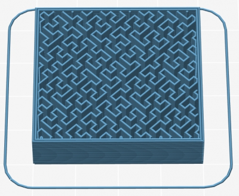
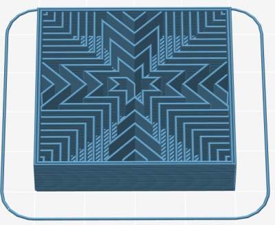

Release notes for 1.2.2 (2014-12-26)
Thanks for the massive amount of feedback about all the new features in 1.2.0 (see release notes for the full list)!
This release contains improvements and bug fixes. Help us testing it in order to make it stable.
New features:
- Objects can be selected and moved in the 3D view
- New experimental feature for Pressure Management based on the advance algorithm (#1203 #1677 #2018)
- New Solid Infill Extruder option for selecting the extruder to be used for solid infill (#618)
- Support Material interface layers are now generated also above the object’s top surfaces where support material, so that they can be printed with the interface extruder. (#1939)
Improvements:
- Several toolpaths and travel moves were optimized in order to reduce printing time.
- When a preset has unsaved changes, Slic3r now lists the changed options to the user.
- The Toolpaths Preview window was moved into the main window instead of the separate modal dialog.
- Slic3r now remembers size and position of the main window.
- The Hilbert Curve, Archimedean Chords and Octagram Spiral infill patterns are now centered around object’s center and they are not cross-hatched anymore in order to get a nicer effect.
- Several code parts were refactored.
- More user-friendly behavior of the Spiral Vase option checkbox: it now prompts the user whenever other options needs to be adjusted for it to work. Also, the command line –spiral-vase flag now overrides –perimeters, –top-solid-layers, –fill-density instead of throwing an incompatibility error. (#2360)
- The layout of the plater panel was slightly changed in order to have larger selectors for presets (long preset names were truncated on Windows).
- Configuration validation errors are now shown in the status bar when background processing failed.
- When Only retract when crossing perimeters is enabled, retraction is now triggered also when crossing boundaries of adjacent regions. (#2298)
- Original object slice contours are displayed in overlay in the Toolpaths Preview.
- The Wipe feature does not generate wiping moves after layer change anymore. (#2214)
Changes:
- –solid-fill-pattern was renamed to –external-fill-pattern in order to reflect its effect better.
- Brim is now printed using the extruder configured for perimeters.
Bugfix:
- When Lift on retraction was enabled and Z offset contained a value that was greater than the amount of the lift, an initial move was generated that pushed the extruder below the configured Z offset (#2349)
- Skirt and brim were not recalculated in background when objects were simply moved in the plater
- Proper Unicode handling in file names and paths
- Spiral Vase did not work when the extrusion axis was not E. (#2350)
- Fixed regression causing Small Perimeters Speed not to be applied (#2365)
- Fixed regression causing retraction to be skipped when Retract Lenght was 0 but Use Firmware Retraction was enabled. (#2359)
- Fixed regression causing crashes when using Avoid crossing perimeters under some circumstances.
- Background recalculation was performed partially when First Layer Extrusion Width was changed. (#2379)
- Fixed regression in the Split feature (#2380)
- Infill was not correctly generated when microlayering (Combine infill every ‘n’ layers) was used along with Raft Layers. (#2396)
- Objects were not aligned to Z = 0 before STL export. (#2393)
- Fixed crashes and/or deadlocks caused by background processing (#2394)
- Infill pattern combobox was blank after selection on Windows. (#2361)
- Avoid crossing perimeters generated useless moves during brim printing. (#2412)
- Skirt flow was not properly adjusted when printing multiple skirt layers with different layer heights. (#2307)
- Bed center was not honored in Quick Slice (#2440)
- The Hilbert Curve, Archimedean Chords and Octagram Spiral infill patterns did not cover the entire infill area sometimes. (#863 #1162)
- Perimeters were extruded in the wrong order under some circumstances when Detect overhangs was enabled and bridges were detected (#2258)
- The Bed Shape dialog didn’t retain the origin coordinates under some circumstances. (#2427)
This is how the Hilbert Curve, Archimedean Chords and Octagram Spiral infill patterns look like after the changes in this release:


